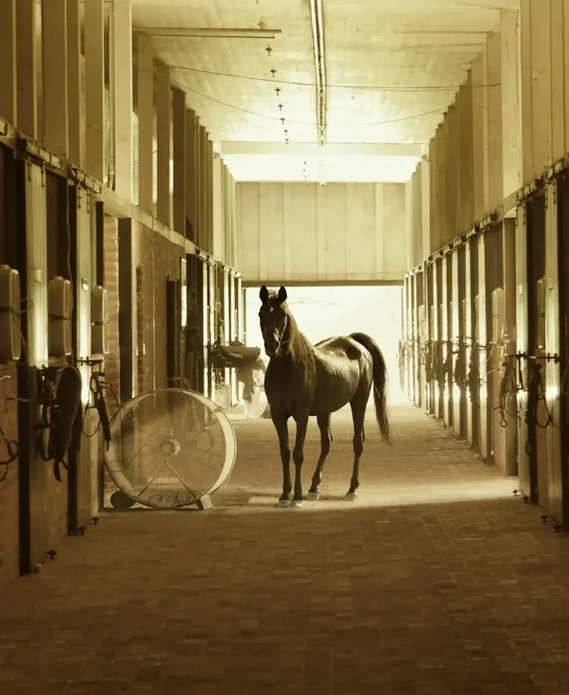
Stap 1
Je belt
Zeg voor wie je belt, jezelf of je kind, en of je al eens op een paard zat. Meer hoeft dat gesprek niet te zijn.
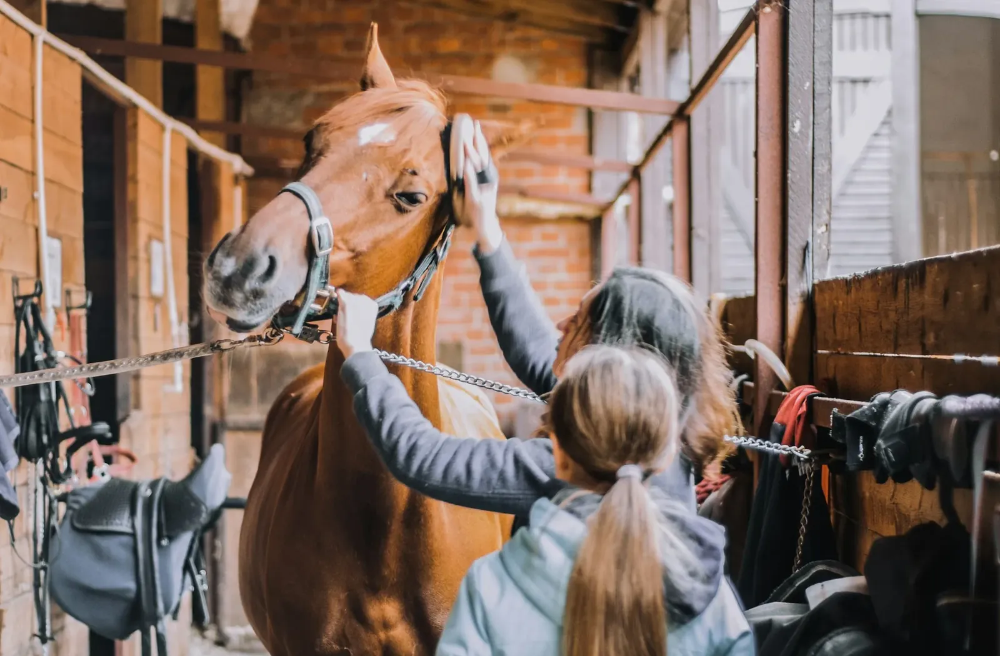
Manege in Mol
Of je nu nog nooit op een paard zat of al jaren rijdt: bij De Steppe aan de Nachtegaalstraat krijg je uitleg die blijft hangen. Bel en kom eerst eens kijken.
Over De Steppe
De Steppe ligt aan de Nachtegaalstraat 37 in Mol. Het is een plek waar mensen komen om te leren, niet om indruk te maken.
Op Google staan 41 reviews met een gemiddelde van 4,6. Wie ze leest, ziet hoe vaak Kris genoemd wordt, voor zijn kennis en voor de manier waarop hij dingen uitlegt.
Wie eens wil proeven, belt best vooraf. Dan kom je kijken, stel je je vragen en voel je zelf of het klikt.
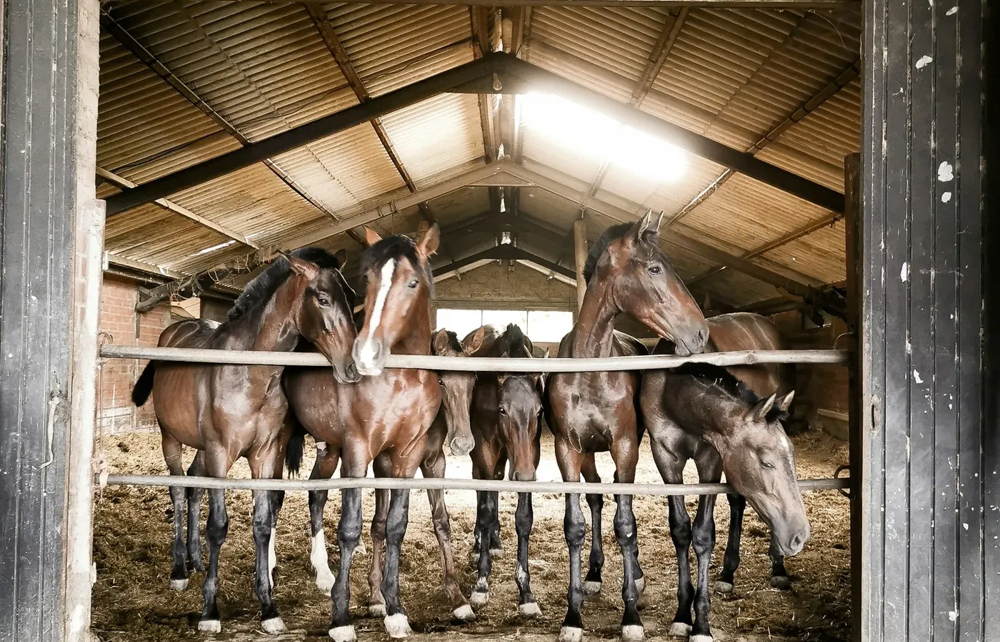
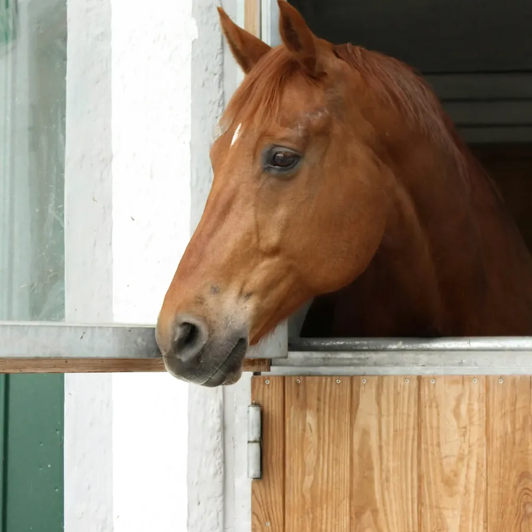
Je eerste keer
De eerste stap is de moeilijkste, en ook de kortste. Daarna bekijk je samen met Kris wat bij jou of je kind past.

Zeg voor wie je belt, jezelf of je kind, en of je al eens op een paard zat. Meer hoeft dat gesprek niet te zijn.
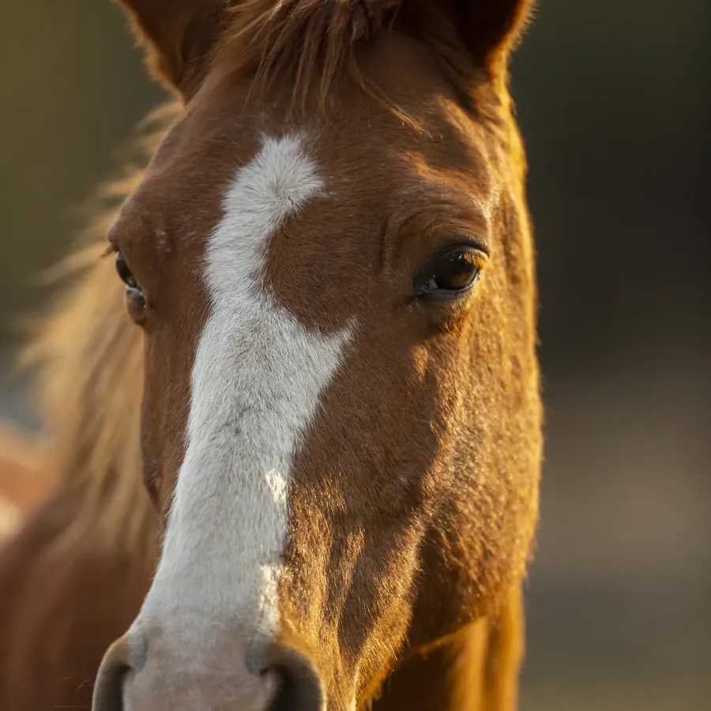
Je ziet de manege en de paarden en spreekt met de mensen die er werken. Stel gerust al je vragen.
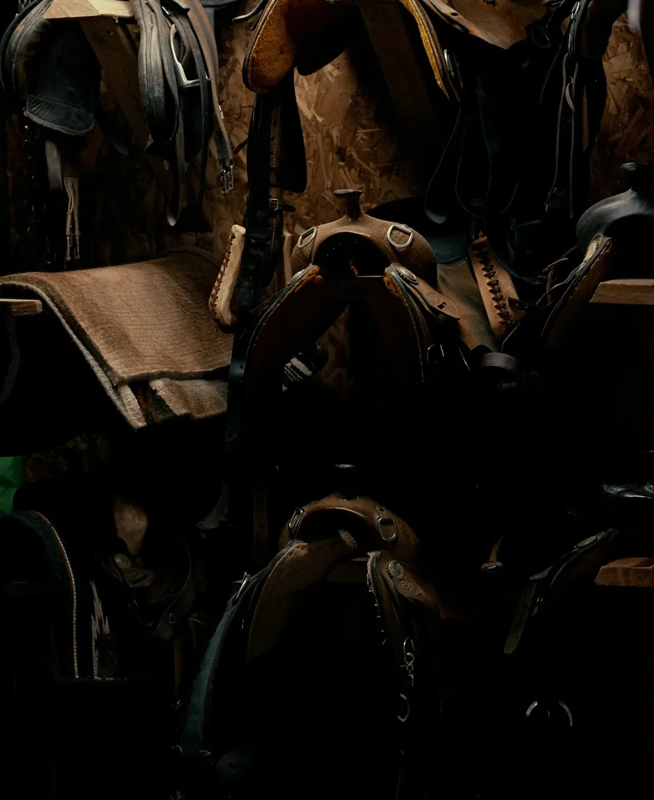
Rustig beginnen: kennismaken met je paard, opstijgen, en wennen aan het ritme.
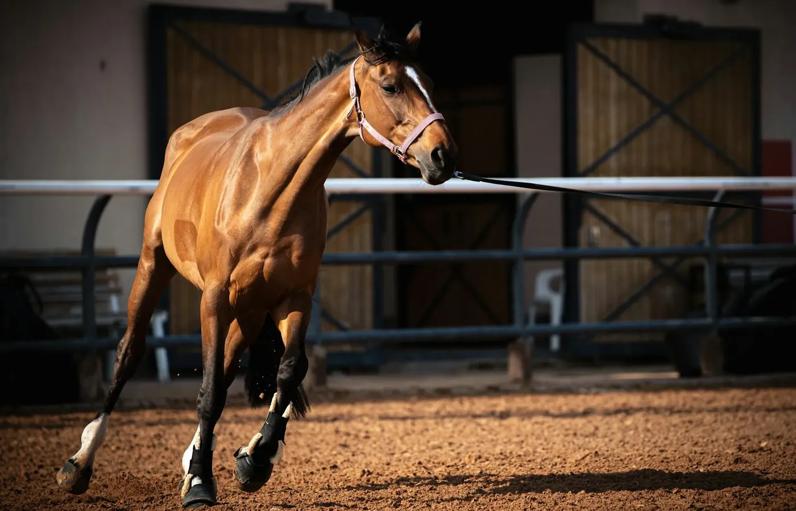
Elke les een beetje verder. Op jouw tempo, met uitleg die je begrijpt.
Wat kan er
Wat er precies mogelijk is en wanneer, hoor je het best aan de telefoon. Zo weet je meteen wat bij jou past.
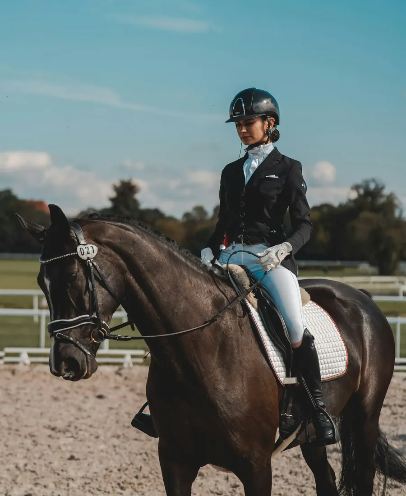
Op een rustige manier leren omgaan met een paard, en daarna leren rijden. Vraag gerust of een paard niet te groot is voor je kind.
Vraag ernaar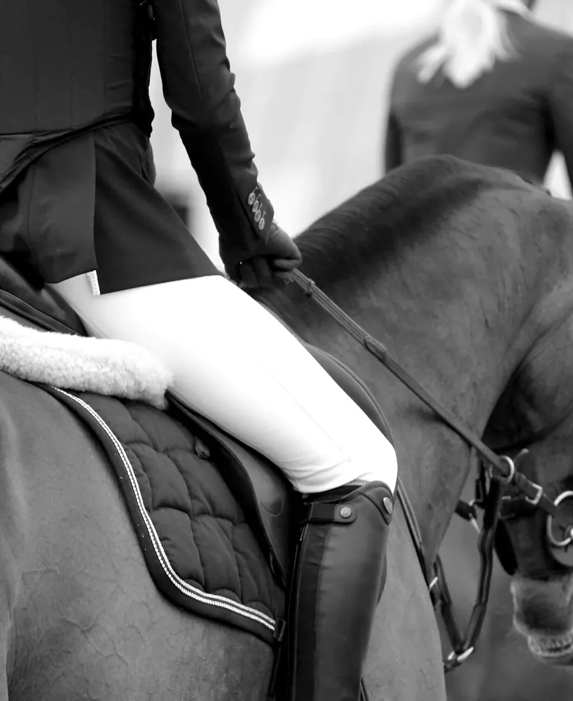
Nooit gereden, of al jaren niet meer? Ook dan begin je gewoon bij het begin, zonder dat je je moet schamen.
Vraag ernaar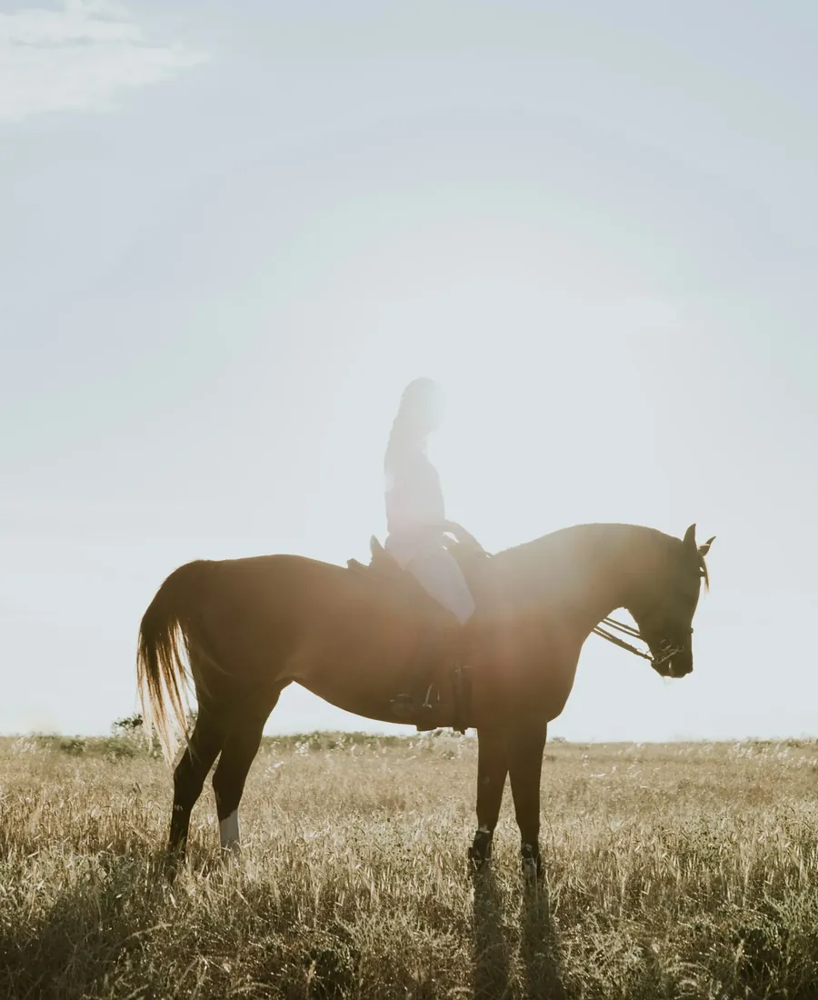
Al ervaring en zin om bij te leren? Bespreek met Kris waar je naartoe wil.
Vraag ernaar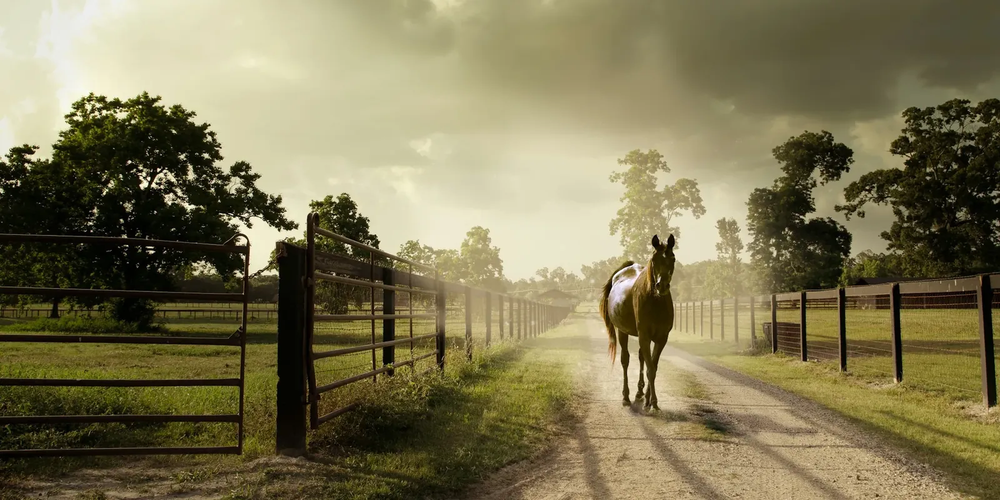
Daarom begin je bij De Steppe niet met een snelle les, maar met kijken, voelen en vragen.
Vragen
Staat je vraag er niet tussen? Bel gerust naar 014 31 34 97.
Zeker. Iedereen begint ergens. Zeg het bij het bellen, dan wordt daar rekening mee gehouden.
Dat bespreek je het best aan de telefoon of tijdens de kennismaking. Dan wordt samen gekeken wat past.
Een lange broek en stevige schoenen met een kleine hak zijn een goed begin. Vraag bij het bellen wat er verder nodig is.
Ja, dat is zelfs de beste start. Bel even op voorhand, dan is er iemand die je rondleidt.
Contact
Eén telefoontje is genoeg. Zeg voor wie het is, en wanneer je kunt langskomen.
Nachtegaalstraat 37
2400 Mol
Bel om een moment af te spreken
Ik maakte deze demo voor jullie om te tonen wat er kan. Na een kort gesprek maak ik er iets veel persoonlijkers van, helemaal naar jullie wens.
Vrijblijvend. Ik kom langs of we bellen.
Op maat, op jullie eigen domein.
Geen voorschot. Jullie betalen pas als alles klaar is.
Hosting, domeinnaam en kleine wijzigingen, zoals nieuwe openingsuren.
Omdat een voorbeeld meer zegt dan een mail. Zo zien jullie meteen wat er kan, en het kost jullie niets.
Nee. Het gesprek is vrijblijvend. Vinden jullie het niks, dan is het daarmee gedaan.
Na ons gesprek staat jullie site binnen 10 tot 14 dagen online.
Zeker. Jullie domeinnaam kan gewoon blijven, de nieuwe site komt in de plaats van de oude.
Nee, dat doe ik op basis van ons gesprek. Eigen foto's zijn mooi meegenomen, maar niet nodig om te starten.